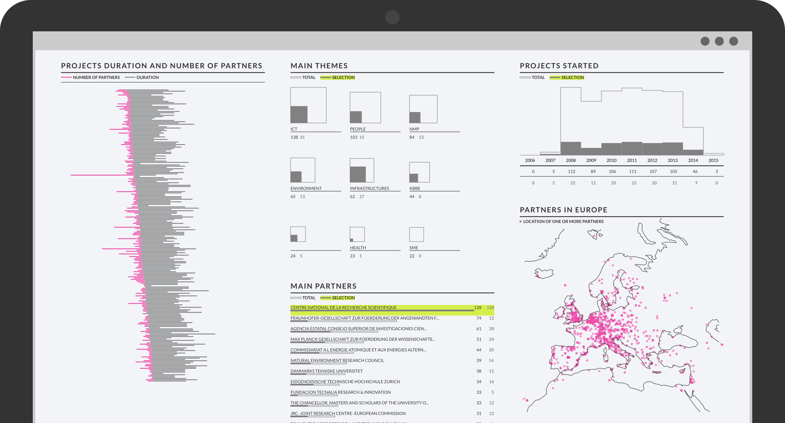

    <article>
      <div class="container">
        <h1>IRM: Visualization of the Italian Research Map database.</h1>
        <p>
          The database <em>Italian Research Map (IRM)</em> collects the data relative to the 7th Framework Programme of the European Commission (FP7).
        </p>
        <p>
          The 173 Countries admitted to FP7 research programme hold more than 100,000 project partecipations altogether.
        </p>
        <p>
          Projects can be grouped according to <em>contractors</em>, i.e. partners collaborating to the projects, <em>theme</em> and <em>year of start</em>.
        </p>
        <p>
          The three type of selections can be combined, offering a higher freedom during the exploration of the dataset. Many of the questions related a given contractor can be answered by visual interaction, being all possible combinations of partners - themes - years be covered. Themes, partners and year of start can be selected and combined in order to answer at questions like <em>"What are the main partners during 2014 for projects related to ICT?"</em>
        </p>
        <p>
          The interactive dashboard has been requested by the <a href="http://en.zadig.it/">Zadig</a> editorial company, and developed in collaboration with Sergio Cima (Zadig) and Paolo Griselli (<a href="http://www.demade.net/">Studio Demade</a>).

        </p>
        <p>
          Data are provided by the European Union, through the <a href="https://open-data.europa.eu">CORDIS</a> data portal.
        </p>
        Visit <a href="http://irm.scienceonthenet.eu/">irm.scienceonthenet.eu</a>.
      </div>
      
    </article>
